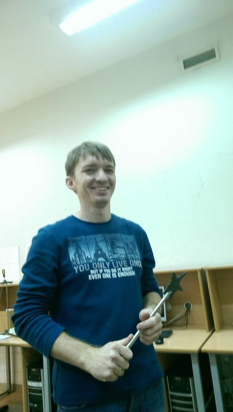
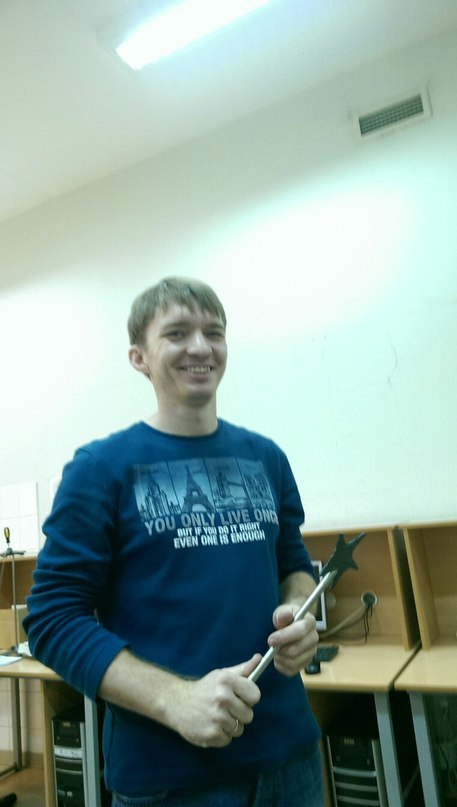
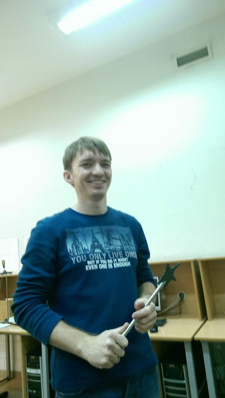
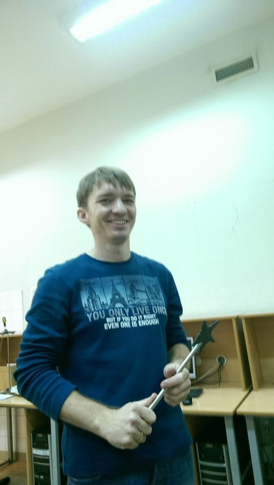

С историей вроде как я, ха-ха, разобрался. Надо бы теперь Юрия Михайловича найти, нужно что-то с лабой сделать. Сам эксперимент делается не сложно, а вот отчёт.. Эти погрешности, графики, да ещё к ним нужно подходящий вывод сделать.. Может всё же мне что-нибудь помогут сделать
*тут-тук-тук*
- Да, зайдите
- Здравствуйте Юрий Михайлович! Мне тут сказали досдать долги..
- Ну что ж, хорошая идея. Отчёт ты написать, как я понимаю, уже не успеешь. Чего же все тянут с отчётами до самого конца-то? Сам экперимент - это только малая часть работы ведь
- Так что же мне сделать тогда?.. Если можно, конечно
- Думаю.. Наверное можешь собрать схему и сказать, какой тут течёт ток
- Я готов
- Вот, держи эту макетную панель, собирай
мини-игра
- Ну вот, молодец. Что ж, будем считать, что долги ты сдал
- Спасибо Вам большое, я пойду
На самом деле эти кабинеты - одни из самых интересных. Тут много удивительных вещей много увидеть. Тут есть трансформатор Тесла, электрофорнная машина, может тут даже и плутоний надётся :) Тут столько невообразимых штук можно сделать. Я бы по праву сказал, что это один из интереснейших предметов. Но вот только отчёты..
Дальше